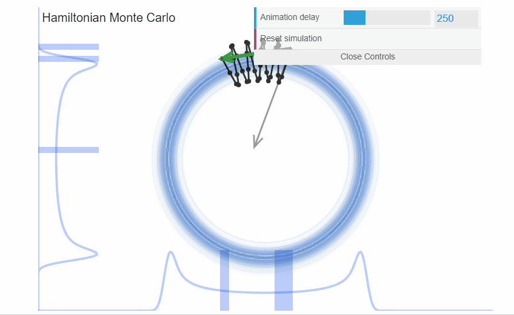
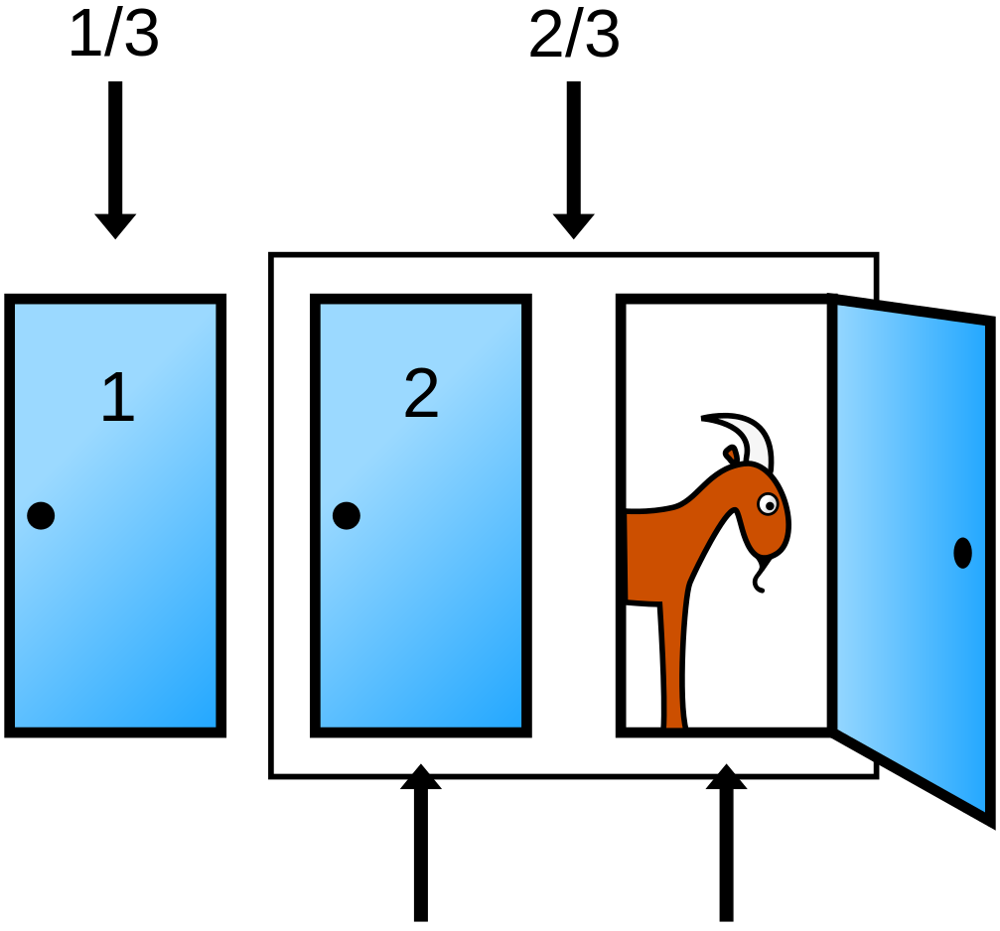
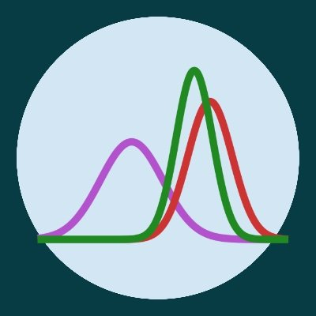

| height | weight | age | male | |
|---|---|---|---|---|
| 0 | 151.765 | 47.825606 | 63.0 | 1 |
| 1 | 139.700 | 36.485807 | 63.0 | 0 |
| 2 | 136.525 | 31.864838 | 65.0 | 0 |
| 3 | 156.845 | 53.041914 | 41.0 | 1 |
| 4 | 145.415 | 41.276872 | 51.0 | 0 |
Contexte pratique à la statistique bayésienne
Applications en python
Thierry Phénix
IMAD – Institution genevoise de maintien à domicile, Genève Suisse
October 17, 2024
Préambule
Objectifs du cours
- Vous présenter les concepts de l’analyse Bayésienne
- Vous aider à comprendre la différence avec l’inférence fréquentiste
- vous convaincre que l’approche bayésienne est plus pertinente
- Vous donner les points d’entrée pour vous y mettre !
Préambule
Objectifs du cours
- Vous présenter les concepts de l’analyse Bayésienne
- Vous aider à comprendre la différence avec l’inférence fréquentiste
- vous convaincre que l’approche bayésienne est plus pertinente
- Vous donner les points d’entrée pour vous y mettre !
Informations pratiques
Ce cours se veut interactif. On ne se verra qu’une fois donc… n’hésitez pas à poser des questions !
Ce cours et ses sources seront disponibles en ligne à l’adresse suivante :
https://miashs-www.u-ga.fr/prevert/SpecialiteSC/Cours/Methode_Experimentale_Neuroscience.html
Plan du cours
- Contexte
- L’inférence bayésienne
- Cas pratiques
- Pour aller plus loin
- Définition
- Fisher : Test de significativité
- Neyman et Pearson : Test d’hypothèse
- Inférence frequentiste aujourd’hui
- Jeyffreys : Une alternative oubliée au test de significativté
- Conclusion
Contexte
Définition
La statistique est la discipline qui étudie des phénomènes à travers la collecte de données, leur traitement, leur analyse, l’interprétation des résultats et leur présentation afin de rendre ces données compréhensibles par tous. (wikipedia)
Contexte
Définition
La statistique est la discipline qui étudie des phénomènes à travers la collecte de données, leur traitement, leur analyse, l’interprétation des résultats et leur présentation afin de rendre ces données compréhensibles par tous. (wikipedia)
Contexte
Définition
La statistique est la discipline qui étudie des phénomènes à travers la collecte de données, leur traitement, leur analyse, l’interprétation des résultats et leur présentation afin de rendre ces données compréhensibles par tous. (wikipedia)
Contexte
Fisher : Test de significativité (1925-1935)

Généticien et statisticien britannique unanimement reconnu pour avoir révolutionné la statistique.
Le but du test est de donnée une chance au données d’invalider une hypothèse.
- Une seule hypothèse nommée hypothèse nulle (to be nullified) notée \(H_0\)
- On doit connaître la distribution d’échantillonnage sous l’hypothèse nulle \(P(_~|~H_0)\) pour calculer la probabilité d’observer une valeur au moins aussi extrême que celle observée dans l’échantillon
- Si cette probabilité est faible, on rejette l’hypothèse nulle( seuil de significativité arbitraire)
- pas d’hypothèse alternative
- Il n’existe que l’erreur de type I, rejeter l’hypothèse nulle alors qu’elle est vraie
Contexte
Neyman et Pearson : Test d’hypothèses (1928-1933)
Jerzy Neyman mathématicien et statisticien d’origine polonaise.
Egon Pearson statisticien britanique
Ce test concerne la prise de décision rationnelle sur des hypothèses statistiques
- Mise en avant de la nécessité d’une hypothèse alternative notée \(H_1\) (complémentaires de \(H_0\))
- Le test définit une région de rejet et une région d’acceptation de \(H_0\)
- Le rôle du test est de minimiser sur le long terme la proportion de décisions erronées
- Il existe deux types d’erreurs :
- type I : rejeter \(H_0\) alors qu’elle est vraie (noté \(\alpha\))
- type II : accepter \(H_0\) alors qu’elle est fausse (noté \(\beta\))
- La puissance d’une région est la probabilité de rejeter \(H_0\) quand \(H_1\) est vraie (égale à \(1-\beta\))
Contexte
Inférence fréquentiste aujourd’hui
La norme en vigueur est un amalgame de différentes procédures plus ou moins compatibles :
- La conception décisionnelle des tests d’hypothèse de Neyman et Pearson (Hypothèse alternative et puissance).
- La conception du test de significativité de Fisher (Hypothèse nulle et seuil de significativité)
- l’utilisation d’intervalles de confiance
Contexte
Inférence fréquentiste aujourd’hui
La norme en vigueur est un amalgame de différentes procédures plus ou moins compatibles :
- La conception décisionnelle des tests d’hypothèse de Neyman et Pearson (Hypothèse alternative et puissance).
- La conception du test de significativité de Fisher (Hypothèse nulle et seuil de significativité)
- l’utilisation d’intervalles de confiance
La p-value suscite de nombreuses critiques :
- la valeur de seuil de significativité est arbitraire
- La p_value génère un biais de publication
- cette approche conduit toujours à une décision par la négative, l’hypothèse nulle est souvent la négation de l’hypothèse d’intérêt
- la p-value est sensible à la taille de l’échantillon (paradoxe de Lindley)
- Confusion entre significativité et taille d’effet : la p_value représente \(P(E|H_0)\) et non \(P(H_0|E)\)
Contexte
Jeyffreys : Une alternative “oubliée” au test de significativté (1939)
Géophysicien britannique
Considéré comme la première tentative de développer une théorie formelle de l’inférence statistique basée sur l’approche bayésienne
Ce test permet de compare deux hypothèses, une valeur précise d’un paramètre contre toutes les autres valeurs possibles
- Il fait l’hypothèse que ces deux hypothèses sont équiprobables
- Il s’intéresse aux probabilités a posteriori \(P(H_0|E)\) et \(P(H_1|E)\) (E sont les observations)
- Et plus particulièrement à leur rapport \(P(H_0|E)/P(H_1|E)\) nommé le facteur de Bayes
- Il ne cherche donc pas à nullifier une hypothèse
- Les deux hypothèses ne doivent pas nécessairement être complémentaires
Contexte
Conclusion
L’approche fréquentiste se focalise sur la fiabilité des procédures qui engendrent les résultats :
- erreur de type I : on accepte de valider \(H_1\) à tort dans 5% des cas
- erreur de type II : on accepte de rejeter \(H_1\) à tort dans 20% des cas
- intervalle de confiance : on accepte que la vraie valeur du paramètre ne soit pas dans l’intervalle de confiance dans 5% des cas
Contexte
Conclusion
L’approche fréquentiste se focalise sur la fiabilité des procédures qui engendrent les résultats :
- erreur de type I : on accepte de valider \(H_1\) à tort dans 5% des cas
- erreur de type II : on accepte de rejeter \(H_1\) à tort dans 20% des cas
- intervalle de confiance : on accepte que la vraie valeur du paramètre ne soit pas dans l’intervalle de confiance dans 5% des cas
L’approche bayésienne se focalise sur la crédibilité des hypothèses au regard des observations \(P(H|E)\)
Contexte
Conclusion
L’approche fréquentiste se focalise sur la fiabilité des procédures qui engendrent les résultats :
- erreur de type I : on accepte de valider \(H_1\) à tort dans 5% des cas
- erreur de type II : on accepte de rejeter \(H_1\) à tort dans 20% des cas
- intervalle de confiance : on accepte que la vraie valeur du paramètre ne soit pas dans l’intervalle de confiance dans 5% des cas
L’approche bayésienne se focalise sur la crédibilité des hypothèses au regard des observations \(P(H|E)\)
Alors pourquoi cette approche n’est pas l’approche dominante ?
Pour répondre il faut d’abord comprendre les grands principes de l’inférence bayésienne…
Plan du cours
- Contexte
- L’inférence bayésienne
- Cas pratiques
- Pour aller plus loin
- Grands principes
- Théorème de Bayes
- Les priors
- La distribution postérieure
- Un exemple
L’inférence bayésienne
Grands principes
L’hypothèse de base de l’inférence bayésienne est que la probabilité doit-être interprétée comme un degré de croyance rationnelle.
L’inférence bayésienne
Grands principes
L’hypothèse de base de l’inférence bayésienne est que la probabilité doit-être interprétée comme un degré de croyance rationnelle.
L’inférence bayésienne est associée aux trois principes suivants :
- Les degrés de croyance sont représentés par des probabilités
- La révision des degrés de croyance est régie par l’utilisation le théorème de Bayes
- L’évaluation des hypothèses et les prises de décision reposent uniquement sur la distribution a posteriori \(P(H|E)\) où \(E\) représente les observations et \(H\) les hypothèses
L’inférence bayésienne
Théorème de Bayes
Considérons des hypothèses \(H\) et des observations (evidence) \(E\).
Par exemple :
- \(H\) : la pièce lancée est équilibrée
- \(E\) : la pièce est tombée 5 fois sur pile
Ce qui nous intéresse c’est la distribution de probabilité conjointe d’avoir ces évènements et cette hypothèse :
\[P(H,E)\]
L’inférence bayésienne
Théorème de Bayes
Considérons des hypothèses \(H\) et des observations (evidences) \(E\).
Ce qui nous intéresse c’est la distribution de probabilité conjointe d’avoir ces évènements et ces hypothèses :
\[P(H,E)\]
On peut décomposer cette distribution conjointe en utilisant les probabilités conditionnelles. Deux manières possibles :
- En passant par la probabilité des hypothèses sachant les observations : \[P(H,E) = P(H|E)P(E)\]
Autrement dit la probabilité que la pièce soit équilibrée sachant qu’elle a été lancée 5 fois sur pile, multipliée par la probabilité d’avoir 5 fois pile (dans l’absolue)
L’inférence bayésienne
Théorème de Bayes
Considérons des hypothèses \(H\) et des observations (evidences) \(E\).
Ce qui nous intéresse c’est la distribution de probabilité conjointe d’avoir ces évènements et ces hypothèses :
\[P(H,E)\]
On peut décomposer cette distribution conjointe en utilisant les probabilités conditionnelles. Deux manières possibles :
En passant par la probabilité des hypothèses sachant les observations : \[P(H,E) = P(H|E)P(E)\]
En passant par la probabilité des observations sachant les hypothèses : \[P(H,E) = P(E|H)P(H)\]
Cette fois en considérant la probabilité d’avoir lancé 5 fois sur pile sachant que la pièce est équilibrée, multipliée par la probabilité que la pièce soit équilibrée
L’inférence bayésienne
Théorème de Bayes
Considérons une hypothèse \(H\) et des observations (evidence) \(E\).
En combinant les deux égalités précédentes, on obtient le théorème de Bayes :
\[P(H|E) = P(H) \frac{P(E|H)}{P(E)}\]
Ce théorème permet de passer de la connaissance de l’hypothèse avant d’avoir vu les observations \(P(H)\) à la probabilité a posteriori des hypothèses, une fois les observations prise en compte \(P(H|E)\)
L’inférence bayésienne
Théorème de Bayes
Considérons une hypothèse \(H\) et des observations (evidence) \(E\).
En combinant les deux égalités précédentes, on obtient le théorème de Bayes :
\[P(H|E) = P(H) \frac{P(E|H)}{P(E)}\]
Mais cette démarche met en évidence deux difficultés :
- La connaissance a priori de la probabilité des hypothèses \(P(H)\)
- Le calcul de la probabilité des observations \(P(E)\) ( la constante de normalisation)
L’inférence bayésienne
Les priors
Au début du XX ème siècle, l’idéal dominant est que la science doit aspirer à la certitude et fournir une vision objective et impartiale de la réalit.
La notion de prior “forcément” subjectif conduira au rejet de l’approche bayésienne
Il existe aujourd’hui trois propositions de piors
L’inférence bayésienne
Les priors
Les priors conjugués (solution analytique)
Ces priors permettent de calculer analytiquement la distribution postérieure.
L’inférence bayésienne
Les priors
Les priors non informatifs :
Un prior non informatif est une distribution de probabilité qui a pour but d’avoir une influence minimale sur les résultats de l’analyse.
- Cela permet aux données observées de jouer un rôle plus déterminant dans la formation des conclusions.
- Utilisés pour caractériser une absence d’information préalable.
- Un exemple est un prior uniforme sur un intervalle de valeurs.
L’inférence bayésienne
Les priors
Les priors non informatifs :
Un prior non informatif est une distribution de probabilité qui a pour but d’avoir une influence minimale sur les résultats de l’analyse.
- Cela permet aux données observées de jouer un rôle plus déterminant dans la formation des conclusions.
- Utilisés pour caractériser une absence d’information préalable.
- Un exemple est un prior uniforme sur un intervalle de valeurs.
Cette notion de prior non informatif est souvent attribuée à Harold Jeffreys.
L’inférence bayésienne
Les priors
Les priors faiblement informatifs
Un prior faiblement informatif est une distribution de probabilité qui a pour but d’avoir une influence minimale sur les résultats, tout en facilitant les calculs de la distribution postérieure.
- Un exemple : on considère un modèle de régression linéaire avec deux priors, un pour le paramètre lié à la moyenne et un pour la variance. Un prior faiblement informatif sera une distribution de probabilité sur les valeurs positives, comme une distribution exponentielle ou half-Normale.
L’inférence bayésienne
Les priors
Les priors faiblement informatifs
Un prior faiblement informatif est une distribution de probabilité qui a pour but d’avoir une influence minimale sur les résultats, tout en facilitant les calculs de la distribution postérieure.
- Un exemple : on considère un modèle de régression linéaire avec deux priors, un pour le paramètre lié à la moyenne et un pour la variance. Un prior faiblement informatif sera une distribution de probabilité sur les valeurs positives, comme une distribution exponentielle ou half-Normale.
Cette notion de prior faiblement informatif a été popularisé par Andrew Gelman.
Il est également à la base du logiciel STAN qui est un des premiers outils de modélisation bayésienne.
L’inférence bayésienne
La distribution postérieure
On a vu que le prise de décision doit repose sur la seule distribution postérieure.
Problème : Dans la majeure partie des cas, la distribution postérieure n’est pas calculable analytiquement.
L’évolution des capacités de calculs a permis de développer des méthodes d’inférence bayésienne qui permettent de calculer la distribution postérieure de manière approchée.
Voici deux méthodes d’inférence bayésienne
L’inférence bayésienne
La distribution postérieure
Stochastic Variational Inference 1
Cette méthode est rapide et précise.
Cependant, sa précision peu se dégrader en fonction des choix de famille de distribution et de la dimension du problème. 
L’inférence bayésienne
La distribution postérieure
Markov Chain Monte Carlo
Cette méthode est la plus robuste.
Cependant, elle peut devenir lente avec l’augmentation des dimensions. 
L’inférence bayésienne
La distribution postérieure
exemple : Hamiltonian Monte Carlo
Cette méthode a beaucoup évoluée et est adaptée à toute sorte de distribution sur les paramètres. 
L’inférence bayésienne
Bilan de la démarche
- Poser la question d’intérêt clairement
Formuler les hypothèses et en déduire
- les variables prédictrices (variables indépendantes)
- les variables prédites (variables dépendantes)
- les variables non mesurées (mais influentes)
L’inférence bayésienne
Bilan de la démarche
- Poser la question d’intérêt clairement
- Définir le modèle génératif
Comment sont générées les données
- La VD évolue avec les VIs \(\to\) modèle linéaire
- La VD est binaire \(\to\) modèle logistique
- La VD est un temps d’attente \(\to\) modèle de poisson
- …
L’inférence bayésienne
Bilan de la démarche
- Poser la question d’intérêt clairement
- Définir le modèle génératif
- Implémenter le modèle et calculer la postérieure
Implémentation
- Construire le modèle
- Définir les priors
- Faire tourner l’inférence
- Vérifier l’algorithme
L’inférence bayésienne
Bilan de la démarche
- Poser la question d’intérêt clairement
- Définir le modèle génératif
- Implémenter le modèle et calculer la postérieure
- Confronter le résultat à la réalité
Vérification et consolidation
- Visualiser les résultats
- Boucler en modifiant le modèle jusqu’à obtenir un résultat satisfaisant
L’inférence bayésienne
Un exemple : Le problème de Monty Hall

Le joueur a-t-il intérêt à changer de porte ?
- Formuler le problème de manière “bayésienne”
- Définir la distribution a priori
- Définir la fonction de vraisemblance
- Appliquer le théorème Bayes
- Le résultat était-il intuitif ?
L’inférence bayésienne
Un exemple : Le problème de Monty Hall
Posons le problème de manière bayésienne :
- L’espace des probabilité est conditionné par le fait que le joueur a choisi la porte A
- L’hypothèse \(H\) que l’on considère est : La voiture se trouve dernière la porte A, B ou C
- La donnée \(E\) est : l’animateur a ouvert la porte C
Question : Quelle est la distribution a posteriori (que la voiture soit derrière une des deux porte restante) ?
\[P(H|D) ?\]
L’inférence bayésienne
Un exemple : Le problème de Monty Hall
Définissons la distribution a priori :
\[P(H~|~E) = \frac{P(E~|~H)~P(H)}{P(E)}\]
- Calcul du prior \(P(H)\) :
Probabilité que la voiture soit derrière les portes A, B ou C.
-> On n’a pas d’information particulière donc on choisit un prior non informatif (distribution uniforme).
| H | \(P(H)\) | |
|
|---|---|---|---|
| porte A | 1/3 | ||
| porte B | 1/3 | ||
| porte C | 1/3 |
L’inférence bayésienne
Un exemple : Le problème de Monty Hall
Posons le problème de manière bayésienne :
\[P(H~|~E) = \frac{P(E~|~H)~P(H)}{P(E)}\]
- Calcul de la vraisemblance \(P(E~|~H)\) :
Probabilité que l’animateur ouvre la porte C sachant que le joueur a choisi la porte A et que la voiture se trouve derrière la porte H.
| H | \(P(H)\) | |
|
|---|---|---|---|
| porte A | 1/3 | |
|
| porte B | 1/3 | |
|
| porte C | 1/3 | |
L’inférence bayésienne
Un exemple : Le problème de Monty Hall
Posons le problème de manière bayésienne :
\[P(H~|~E) = \frac{P(E~|~H)~P(H)}{P(E)}\]
- \(P(H|E)\) : Probabilité postérieure de chaque porte sachant que l’animateur ouvre la porte C sachant que le joueur a choisi la porte A.
| H | \(P(H)\) | |
|
|---|---|---|---|
| porte A | 1/3 | |
|
| porte B | 1/3 | |
|
| porte C | 1/3 | |
|
Plan du cours
- Contexte
- L’inférence bayésienne
- Cas pratiques
- Pour aller plus loin
- EDA
- Estimation de paramètres
- Test d’hypothèse
- Comparaison de modèles
Cas pratiques
Exploratory data analysis
Les données
Cas pratiques
Exploratory data analysis
Les données
Cas pratiques
Estimation de paramètres
Premier problème
Question : Peut-on prédire le poids à partir de la taille après 18 ans ?
Préparation des données :
Pour Numpyro
Cas pratiques
Estimation de paramètres
Peut-on prédire le poids à partir de la taille après 18 ans ?
\[ \begin{align} W_i \sim Normal(\mu_i, \sigma) \\ mu_i = \alpha + \beta H_i \\ \alpha \sim Normal(0, 1) \\ \beta \sim HalfNormal(1) \\ \sigma \sim HalfNormal(1) \\ \end{align} \]
- \(\alpha\) : c’est l’intercept et dans notre cas le poids correspondant à la taille moyenne de l’échantillon.
- \(\beta\) : c’est la pente et dans notre cas l’augmentation de poids correspondant à une augmentation de taille de 1 cm.
- \(\sigma\) : c’est l’écart-type du modèle.
Cas pratiques
Estimation de paramètres
Peut-on prédire le poids à partir de la taille après 18 ans ?
Implémentation du modèle
# Define the model
def mdl1(height, weight=None):
# Define prior
a = numpyro.sample('a', dist.Normal(0, 1))
b = numpyro.sample('b', dist.HalfNormal(0, 1))
s = numpyro.sample('s', dist.HalfNormal(1))
# Define likelihood
numpyro.sample("obs", dist.Normal(a+b*height, s), obs=weight)
# plot model
numpyro.render_model(mdl1, model_args=dat1.values(), render_distributions=True)Cas pratiques
Estimation de paramètres
Peut-on prédire le poids à partir de la taille après 18 ans ?
- Calcul des résultats
Cas pratiques
Estimation de paramètres
Peut-on prédire le poids à partir de la taille après 18 ans ?
- Vérification de la convergence de l’algorithme
Cas pratiques
Estimation de paramètres
Peut-on prédire le poids à partir de la taille après 18 ans ?
- Visualisation des résultats
Cas pratiques
Estimation de paramètres
Peut-on prédire le poids à partir de la taille après 18 ans ?
- Conclusion
mean std median 5.5% 94.5% n_eff r_hat
a 41.92 0.43 41.95 41.23 42.57 893.65 1.00
b 0.63 0.03 0.63 0.57 0.69 1176.63 1.00
s 5.08 0.29 5.06 4.65 5.56 824.26 1.00
Number of divergences: 0- On peut dire :
- Pour la taille moyenne, le poids est de 41.89kg et à 89% dans [41.25, 42.59]
- Pour chaque centimètre supplémentaire, le poids augmente de 630g
Cas pratiques
Test d’hypothèse
Deuxième problème
Question : Quelle est la différence de poids entre les hommes et les femmes après 18 ans ?
Cas pratiques
Test d’hypothèse
Différence de poids hommes/femmes après 18 ans ?
\[ \begin{align} W_i \sim Normal(\mu_i, \sigma) \\ \mu_i = \alpha[male] \\ \alpha \sim HalfNormal(0, 10) \\ \sigma \sim HalfNormal(1) \\ \end{align} \]
- \(\alpha\) : c’est l’intercept mais il prend deux valeur, une pour les hommes et une pour les femmes. A noter que la distribution est une HalfNormal car les valeurs doivent être positives.
- \(\sigma\) : c’est l’écart-type du modèle.
Cas pratiques
Test d’hypothèse
Différence de poids hommes/femmes après 18 ans ?
Implémentation du modèle
# create dict for inference with numpyro
dat2 = {
"male" : data_sup18.male.values,
"weight" : data_sup18.weight.values
}
# Define the model
def mdl2(male, weight=None):
# Define prior
with numpyro.plate("male", 2):
a = numpyro.sample('a', dist.HalfNormal(10))
s = numpyro.sample('s', dist.HalfNormal(1))
diff_a = numpyro.deterministic("diff_a", a[1]- a[0])
# Define likelihood
numpyro.sample("obs", dist.Normal(a[male], s), obs=weight)
# plot model
numpyro.render_model(mdl2, model_args=dat2.values(), render_distributions=True)Cas pratiques
Test d’hypothèse
Différence de poids hommes/femmes après 18 ans ?
Graph du modèle
Cas pratiques
Test d’hypothèse
Différence de poids hommes/femmes après 18 ans ?
- Calcul des résultats
Cas pratiques
Test d’hypothèse
Différence de poids hommes/femmes après 18 ans ?
- Vérification de la convergence de l’algorithme
Cas pratiques
Test d’hypothèse
Différence de poids hommes/femmes après 18 ans ?
- Visualisation des résultats
Cas pratiques
Test d’hypothèse
Différence de poids hommes/femmes après 18 ans ?
- Conclusion
| mean | sd | hdi_5.5% | hdi_94.5% | mcse_mean | mcse_sd | ess_bulk | ess_tail | r_hat | |
|---|---|---|---|---|---|---|---|---|---|
| a[0] | 41.756 | 0.383 | 41.161 | 42.344 | 0.012 | 0.008 | 1083.0 | 630.0 | NaN |
| a[1] | 48.503 | 0.443 | 47.721 | 49.133 | 0.013 | 0.009 | 1258.0 | 583.0 | NaN |
| diff_a | 6.747 | 0.620 | 5.703 | 7.675 | 0.018 | 0.013 | 1207.0 | 576.0 | NaN |
| s | 5.318 | 0.190 | 5.041 | 5.633 | 0.007 | 0.005 | 858.0 | 686.0 | NaN |
- On peut dire que en moyenne la différence de poids entre les hommes et les femmes âgés de plus de 18 ans est de 6.7kg en faveur des homme et se touve à 89% dans [5.7, 7.6].
Cas pratiques
Comparaison de modèles
Troisième problème
Question : Quelle est le meilleur modèle pour prédire le poids en fonction de la taille ?
Cas pratiques
Comparaison de modèles
Meilleur modèle pour prédire le poids en fonction de la taille ?
- Modèle linéaire
# This time with all the data
df_howell1["height_c"] = center(df_howell1.height)
dat3 = {
"height" : df_howell1.height_c.values,
"weight" : df_howell1.weight.values
}
# Define the model
def mdl3a(height, weight=None):
# Define prior
a = numpyro.sample('a', dist.Normal(0, 10))
b = numpyro.sample('b', dist.Normal(0, 1))
s = numpyro.sample('s', dist.HalfNormal(1))
# Define likelihood
numpyro.sample("obs", dist.Normal(a+b*height, s), obs=weight)Cas pratiques
Comparaison de modèles
Meilleur modèle pour prédire le poids en fonction de la taille ?
- Modèle quadratic
# Define the model
def mdl3b(height, weight=None):
# Define prior
a = numpyro.sample('a', dist.Normal(0, 10))
b1 = numpyro.sample('b1', dist.Normal(0, 1))
b2 = numpyro.sample('b2', dist.Normal(0, 1))
s = numpyro.sample('s', dist.HalfNormal(1))
# Define likelihood
numpyro.sample("obs",
dist.Normal(a+b1*height+b2*height**2, s),
obs=weight)- Modèle cubic
# Define the model
def mdl3c(height, weight=None):
# Define prior
a = numpyro.sample('a', dist.Normal(0, 10))
b1 = numpyro.sample('b1', dist.Normal(0, 1))
b2 = numpyro.sample('b2', dist.Normal(0, 1))
b3 = numpyro.sample('b3', dist.Normal(0, 1))
s = numpyro.sample('s', dist.HalfNormal(1))
# Define likelihood
numpyro.sample("obs",
dist.Normal(a+b1*height+b2*height**2+b3*height**3, s),
obs=weight)Cas pratiques
Comparaison de modèles
Meilleur modèle pour prédire le poids en fonction de la taille ?
- Résultats modèle 1
mean std median 5.5% 94.5% n_eff r_hat
a 35.59 0.21 35.59 35.29 35.94 546.94 1.00
b 0.50 0.01 0.50 0.49 0.52 1096.92 1.00
s 4.90 0.14 4.91 4.68 5.13 707.60 1.00
Number of divergences: 0- Résultats modèle 2
mean std median 5.5% 94.5% n_eff r_hat
a 32.54 0.24 32.54 32.13 32.91 491.65 1.00
b1 0.64 0.01 0.64 0.63 0.66 361.61 1.00
b2 0.00 0.00 0.00 0.00 0.00 464.53 1.00
s 3.90 0.11 3.90 3.72 4.07 438.05 1.00
Number of divergences: 0- Résultats modèle 3
mean std median 5.5% 94.5% n_eff r_hat
a 2.07 0.22 2.04 1.72 2.39 2.63 2.35
b1 0.96 0.04 0.97 0.90 1.02 10.16 1.03
b2 0.04 0.00 0.04 0.04 0.04 37.28 1.08
b3 0.00 0.00 0.00 0.00 0.00 22.70 1.06
s 16.15 0.38 16.15 15.64 16.83 322.70 1.02
Number of divergences: 0Cas pratiques
Comparaison de modèles
Meilleur modèle pour prédire le poids en fonction de la taille ?
- Comparaison des trois modèles
| rank | elpd_waic | p_waic | elpd_diff | weight | se | dse | warning | scale | |
|---|---|---|---|---|---|---|---|---|---|
| mdl quardatic | 0 | -1520.482383 | 3.661986 | 0.000000 | 9.451997e-01 | 20.961410 | 0.000000 | False | log |
| mdl linear | 1 | -1649.165739 | 3.452056 | 128.683357 | 5.480026e-02 | 14.919656 | 16.243557 | False | log |
| mdl cubic | 2 | -2416.594966 | 3.611887 | 896.112584 | 8.177216e-09 | 19.680995 | 22.601487 | True | log |
En pratique, le meilleur modèle est le modèle construit sur les deux premiers modèles, linéaire et quadratique, proportionnellement à leurs poids respectifs.
Plan du cours
- Contexte
- L’inférence bayésienne
- Cas pratiques
- Pour aller plus loin
- Les livres
- Les packages par langage
Pour aller plus loin
Les livres
Plutôt pour les psychos


Pour aller plus loin
Les livres
Plutôt pour python


Pour aller plus loin
Les livres
Plutôt théoriques


Pour aller plus loin
Les packages
En python
Pour aller plus loin
Les packages
En python les mastodontes
L’intérêt de ces deux packages est qu’ils s’ouvrent sur les réseaux de neurones…

Pour aller plus loin
Les packages
En R
BRMS est le package de référence en R.
Pour aller plus loin
Les packages
En Julia

